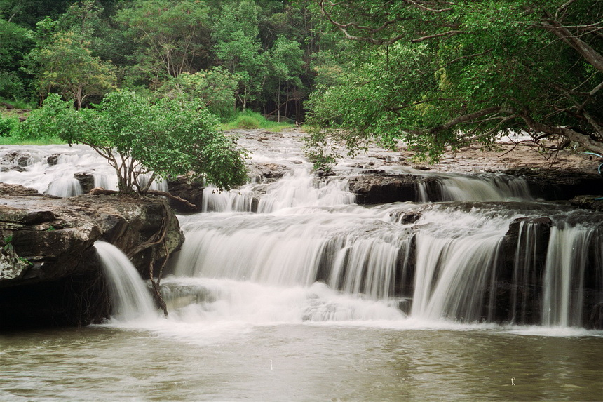

อุทยานแห่งชาติไทรทอง อยู่ในท้องที่อำเภอหนองบัวระเหว อำเภอเทพสถิต อำเภอภักดีชุมพล และอำเภอหนองบัวแดง จังหวัดชัยภูมิ มีเนื้อที่ประมาณ 199,375 ไร่ หรือ 319 ตารางกิโลเมตร มีอาณาเขตติดต่อกับอุทยานแห่งชาติป่าหินงามและอุทยานแห่งชาติภูแลนคา เป็นผืนป่าบนเทือกเขาพังเหย ในช่วงต้นฤดูฝนนอกจากผืนป่าจะเขียวชอุ่มชุ่มชื้นไปด้วยพรรณไม้น้อยใหญ่แล้ว ที่นี่ยังงดงามโดดเด่นด้วยดอกกระเจียวที่ผลิบานอยู่เต็มท้องทุ่ง เรียกชื่อว่า ทุ่งบัวสวรรค์ มีน้ำตกไทรทองที่สวยงาม และมีหน้าผาให้ทุกคนท้าพิสูจน์ของความหวาดเสียว ความเป็นมา : เนื่องจากบริเวณที่ดินป่าเทือกเขาพังเหย และป่านายางกลัก ในท้องที่ตำบลท่าใหญ่ ตำบลถ้ำวัวแดง อำเภอหนองบัวแดง ตำบลบ้านเจียง ตำบลเจาทอง ตำบลวังทอง กิ่งอำเภอภักดีชุมพล อำเภอหนองบัวแดง ตำบลห้วยแย้ ตำบลวังตะเฆ่ อำเภอหนองบัวระเหว และตำบลโป่งนก อำเภอเทพสถิต จังหวัดชัยภูมิ ประกอบไปด้วยทรัพยากรธรรมชาติที่สำคัญและมีค่า เช่น พันธุ์ไม้ ของป่า สัตว์ป่านานาชนิด ตลอดจนทิวทัศน์ ป่า และภูเขาที่สวยงามยิ่ง เช่น น้ำตกไทรทอง ทุ่งบัวสวรรค์ ฯลฯ สมควรกำหนดให้เป็นอุทยานแห่งชาติ ตามพระราชบัญญัติอุทยานแห่งชาติ พ.ศ. 2504